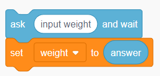
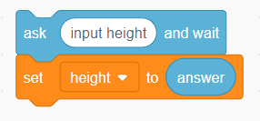
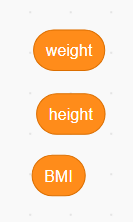
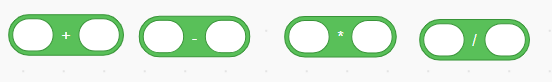
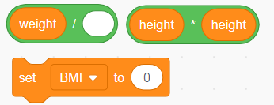
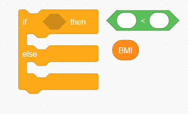

Build your BMI calculator
用 Scratch 寫出你的流程圖
Match each flowchart step with a Scratch block. · 把流程圖的每一步，換成 Scratch 方塊。
Input · 輸入資料
Flowchart parallelograms → Scratch ask + set · 流程圖的輸入框對應 Scratch 的詢問與設定變數。



Create three variables · 建立三個變數：weight、height、BMI。
Save answer immediately after each ask; the next answer replaces the previous one. · 每次詢問後立刻儲存回答，否則下一次回答會覆蓋它。
Height uses metres (m). · 身高輸入公尺。
Calculate · 計算 BMI
Flowchart process rectangle → Scratch operators + set BMI · 計算框對應運算方塊與設定 BMI。


Build the denominator first · 先組合除數：height × height，再把它放進 weight ÷ (height × height)，最後設定 BMI。
Decide · 判斷分類
Flowchart diamonds → Scratch if / else · 判斷菱形對應 Scratch 的如果／否則結構。
False → next decision

Put a comparison in the hexagonal slot. Nest another if / else inside else until all four categories have an output. · 把比較條件放入六角形格子；在 else 裡接下一個 if / else，直到四類都有結果。
Your mission · 完成 BMI 計算器
Open Scratch and build the whole program yourself. · 打開 Scratch，依你的流程圖自行完成整支程式。
- Start with the green flag. · 用「當綠旗被點擊」開始。
- Ask for weight (kg) and height (m), then store both answers. · 詢問並儲存體重、身高。
- Calculate and store
BMI = weight ÷ (height × height). · 算出 BMI。 - Use if / else to output Underweight, Normal, Overweight, or Obesity. · 判斷並顯示四種分類。
- Test different numbers, especially BMI 18.5, 24, and 27. · 測試三個分界值。
The images show individual blocks. Assemble them into your own working program. · 圖片是方塊提示，請自行拼成能運作的程式。